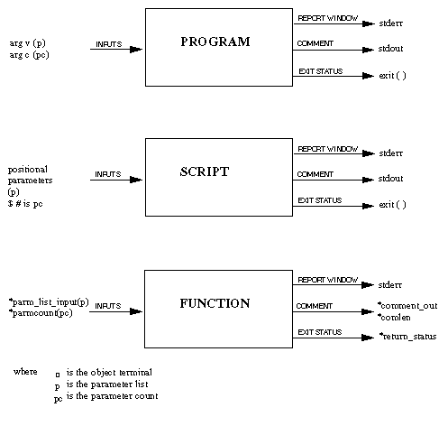

Command Set Types
A Command Set can be one of the following types:
- Function command set: a set of user written functions
- Program command set: a set of programs or scripts.
For a program or a script, you can either wait for it to terminate before executing the next command, or start it without waiting for it to terminate (equivalent to the Linux &).
How to install the command set explains how to implement the different Command Set types, assuming that you are located in the newly created directory where the Command Set is to be installed.
Every command that you implement, irrespective of the Command Set type, receives parameter inputs, and parameter counts. Similarly, from each implemented command it is possible to:
- send messages to the report window
- assign a string (comment) / data log a user procedure string
- and to define the success or failure of the command execution (exit status).
How this is done is different for each type of Command Set and is explained in the relevant chapters. The figure below summarizes how this is achieved for each Command Set type.
